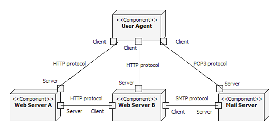
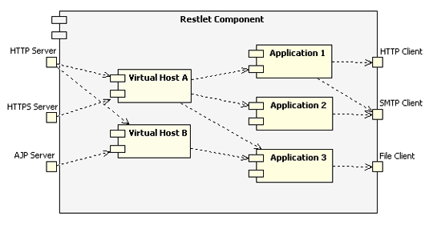

REST main concepts
Overview of a REST architecture
Let’s step back a little and consider typical web architectures from a REST point of view. In the diagram below, ports represent the connector that enables the communication between components which are represented by the larger boxes. The links represents the particular protocol (HTTP, SMTP, etc.) used for the actual communication.

Note that the same component can have any number of client and server connectors attached to it. Web Server B, for example, has both a server connector to respond to requests from the User Agent component, and client connectors to send requests to Web Server A and the Mail Server.
Components, virtual hosts and applications
In addition to supporting the standard REST software architecture elements as presented before, the Restlet framework also provides a set of classes that greatly simplify the hosting of multiple applications within a single JVM. The goal is to provide a RESTful, portable and more flexible alternative to the existing Servlet API. In the diagram below, we can see the three types of Restlets that are provided in order to manage these complex cases. Components can manage several Virtual Hosts and Applications.
Virtual Hosts support flexible configuration where, for example, the same IP address is shared by several domain names, or where the same domain name is load-balanced across several IP addresses. Finally, we use Applications to manage a set of related Restlets, Resources and Representations. In addition, Applications are ensured to be portable and reconfigurable over different Restlet implementations and with different virtual hosts. In addition, they provide important services like access logging, automatic decoding of request entities, configurable status page setting and more!

In order to illustrate these classes, let’s examine a simple example. Here we create a Component, then add an HTTP server connector to it, listening on port 8182. Then we create a simple trace Restlet and attach it to the defaut VirtualHost of the Component. This default host is catching any request that wasn’t already routed to a declared VirtualHost (see the Component.hosts property for details). In a later example, we will also introduce the usage of the Application class. Note that for now you don’t see any access log displayed in the console.
public static void main(String[] args) throws Exception {
// Create a new Restlet component and add a HTTP server connector to it
Component component = new Component();
component.getServers().add(Protocol.HTTP, 8182);
// Then attach it to the local host
component.getDefaultHost().attach("/trace", Part05.class);
// Now, let's start the component!
// Note that the HTTP server connector is also automatically started.
component.start();
}
@Get("txt")
public String toString() {
// Print the requested URI path
return "Resource URI : " + getReference() + '\n' + "Root URI : "
+ getRootRef() + '\n' + "Routed part : "
+ getReference().getBaseRef() + '\n' + "Remaining part: "
+ getReference().getRemainingPart();
}Now let’s test it by entering http://localhost:8182/trace/abc/def?param=123 in a Web browser. Here is the result that you will get:
Resource URI : http://localhost:8182/trace/abc/def?param=123
Root URI : http://localhost:8182/trace
Routed part : http://localhost:8182/trace
Remaining part: /abc/def?param=123